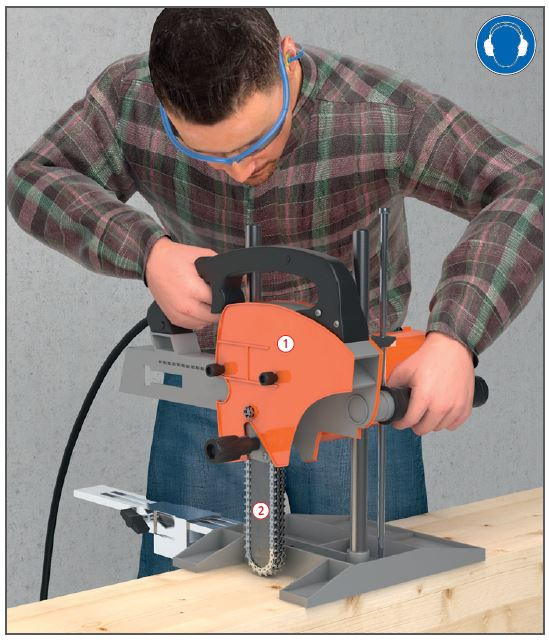
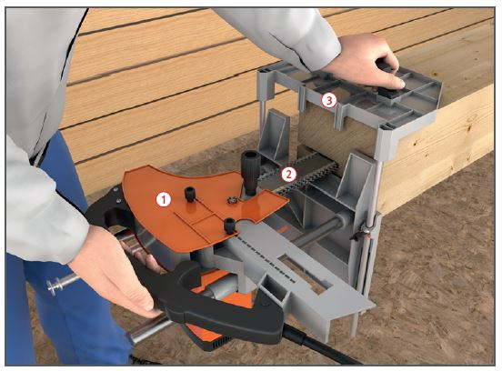

Gefährdungen
- Es kann zu Schnittverletzungen
und einer Schädigung des
Gehörs kommen.
Schutzmaßnahmen
- Betriebsanleitung des Herstellers beachten.
- Unterweisung anhand der Betriebsanweisung.
- Gehörschutz, Schutzbrille und Sicherheitsschuhe benutzen, ggf. Lärm bereich kennzeichnen.
- Eng anliegende Kleidung tragen.
- Auf Verdeckung des Kettenantriebs achten
 .
.
- Spannung der Fräsketten überprüfen und auf wirksame Schmierung achten. Fräsketten rechtzeitig nachschärfen.

- Auf ebene Werkstückauflage
achten. Kippgefährdete Werkstücke zusätzlich einspannen.
- Auf sicheren Standplatz des Beschäftigten achten.
- Splitter, Späne und Abfälle nicht mit der Hand aus dem Gefahrbereich entfernen.
- Vor Arbeitsplatzwechsel und vor dem Ablegen der Maschine Stillstand abwarten.
- Vor dem Wechsel der Fräskette und bei Wartungs- und Instandsetzungsarbeiten Netzstecker ziehen.
- Funktionsfähigkeit der Schlittensicherung regelmäßig überprüfen.
- Maschine stets mit beiden Händen führen.
Zusätzliche Hinweise für Kettenstemmer mit Schlitzgarnitur
- Schlitzgarnitur
 und Führungsgestell
und Führungsgestell  nach Herstellerangaben verwenden.
nach Herstellerangaben verwenden.
- Werkstück gegen Wegrutschen, Umkippen und Hochwippen sichern, z. B. durch Spannzwingen.
Arbeitsmedizinische Vorsorge
- Arbeitsmedizinische Vorsorge
nach Ergebnis der Gefährdungsbeurteilung
veranlassen (Pflichtvorsorge)
oder anbieten (Angebotsvorsorge).
Hierzu Beratung
durch den Betriebsarzt.
Beschäftigungsbeschränkungen
- Jugendliche über 15 Jahre
dürfen nur unter Aufsicht eines
Fachkundigen und wenn es die
Berufsausbildung erfordert an
Kettenstemm-Maschinen arbeiten.
- Jugendliche unter 15 Jahre
dürfen nicht an diesen Maschinen beschäftigt werden.
07/2021